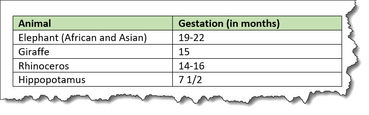

<table>
A table based on the OASIS Exchange Table Model organizes arbitrarily complex relationships of tabular information. This standard table markup provides a wide variety of controls over the display properties of the data and even the table structure itself.
Usage information
The <table> element is based on the OASIS
Exchange Table Model. However, it is
augmented with DITA attributes that enable accessibility, content
reference, specialization, and more.
An optional <title> inside the
<table> element provides a caption to
describe the table. In addition, the optional
<desc> element enables a table
description.
See simpletable for a simplified table model that is closely aligned with the HTML5 table model, and which can be easily specialized.
For
<table>, in place of the
@expanse attribute that is used by other DITA
elements, the @pgwide attribute is used in order to
conform to the OASIS Exchange Table
Model.
Rendering expectations
If a <table> element contains a
<desc> element, the content of the
<desc> element is rendered as part of the
content flow.
Content model
<title>
?,
<desc>
?,
<tgroup>
+
Contained by
<abstract>
,
<body>
,
<bodydiv>
,
<dd>
,
<div>
,
<draft-comment>
,
<example>
,
<li>
,
<lq>
,
<note>
,
<p>
,
<section>
Contained by
Inheritance
- topic/table
The <table> element is a base element type. It is defined in the topic module.
Attributes
The following attributes are available on this element: universal
attributes, @colsep, @frame, @rowheader, @rowsep, @scale, and the attributes defined
below.
@orient- Specifies the orientation of the table in page-based output formats. This attribute is
primarily useful for print-oriented display. The following
values are valid:
- port
- Indicates portrait page orientation. The page is oriented with its long side vertical and its short side horizontal.
- land
- Indicates landscape page orientation. The page is oriented with its long side horizontal and its short side vertical.
- -dita-use-conref-target
- See Using the -dita-use-conref-target value for more information.
@pgwide- Specifies the horizontal placement of the element for
print-oriented rendering. The following values are valid:
- 0
- Aligns the element with the left margin of the current text line and takes indentation into account
- 1
- Places the element on the left page margin
The following attributes are available on this element: universal attributes and the attributes defined below.
@colsep(complex table attributes)- Specifies whether to render column separators between table
entries. The following values are valid: 0
(no separators) and
1 (separators).
The
@colsepattribute is available on the following table elements:<colspec>,<entry>,<table>, and<tgroup>. @frame(display attributes)- Specifies which portion of a border surrounds the element.
The following values are valid:
- all
- Indicates that a line is rendered at the top, bottom, left, and right of the containing element.
- bottom
- Indicates that a line is rendered at the bottom of the containing element.
- none
- Indicates that no lines are rendered.
- sides
- Indicates that a line is rendered at the left and right of the containing element.
- top
- Indicates that a line is rendered at the top of the containing element.
- topbot
- Indicates that a line is rendered at the top and bottom of the containing element.
- -dita-use-conref-target
- See Using the -dita-use-conref-target value for more information.
Some processors or output formats might not support all values.
@orient- Specifies the orientation of the table in page-based output formats. This attribute is
primarily useful for print-oriented display. The following
values are valid:
- port
- Indicates portrait page orientation. The page is oriented with its long side vertical and its short side horizontal.
- land
- Indicates landscape page orientation. The page is oriented with its long side horizontal and its short side vertical.
- -dita-use-conref-target
- See Using the -dita-use-conref-target value for more information.
@pgwide- Specifies the horizontal placement of the element for
print-oriented rendering. The following values are valid:
- 0
- Aligns the element with the left margin of the current text line and takes indentation into account
- 1
- Places the element on the left page margin
@rowheader(complex table attributes)- Specifies whether the entries in the respective column are
row headers. The following values are valid:
- firstcol
- Indicates that entries in the first column of the table
are row headers. This applies when the
@rowheaderattribute is specified on the<table>element.
- headers
- Indicates that entries of the column that is described
using the
<colspec>element are row headers. This applies when the@rowheaderattribute is specified on the<colspec>element. - norowheader
- Indicates that entries in the first column are not row
headers. This applies when the
@rowheaderattribute is specified on the<table>element. - -dita-use-conref-target
- See Using the -dita-use-conref-target value for more information.
Note (non-normative):This attribute is not part of the OASIS Exchange Table Model upon which DITA tables are based. Some processors or output formats might not support all values.The
@rowheaderattribute is available on the following table elements:<table>and<colspec>. @rowsep(complex table attributes)- Specifies whether to render row separators between table
entries. The following values are valid: 0
(no separators) and 1 (separators).
The
@rowsepattribute is available on the following table elements:<colspec>,<entry>,<row>,<table>, and<tgroup>. @scale(display attributes)- Specifies the percentage by which fonts are resized in
relation to the normal text size. The value of this attribute
is a positive integer. When used on
<table>or<simpletable>, the following values are valid: 50, 60, 70, 80, 90, 100, 110, 120, 140, 160, 180, 200, and -dita-use-conref-target.This attribute is primarily useful for print-oriented display. Some processors might not support all values.
If the
@scaleattribute is specified on an element that contains an image, the image is not scaled. The image is scaled only if a scaling property is explicitly specified for the<image>element.
Example
This section is non-normative.
The following code sample shows a table that is used to provide reference information about animals and gestation:
<table>
<tgroup cols="2">
<colspec colwidth="121*"/>
<colspec colwidth="76*"/>
<thead>
<row>
<entry valign="top">Animal</entry>
<entry valign="top">Gestation (in months)</entry>
</row>
</thead>
<tbody>
<row>
<entry>Elephant (African and Asian)</entry>
<entry>19-22</entry>
</row>
<row>
<entry>Giraffe</entry>
<entry>15</entry>
</row>
<row>
<entry>Rhinoceros</entry>
<entry>14-16</entry>
</row>
<row>
<entry>Hippopotamus</entry>
<entry>7 1/2</entry>
</row>
</tbody>
</tgroup>
</table>The formatted output might be rendered in the following way:

In this example, the use of the <thead>
element for the header enables processors or screen readers to
identify a header relationship between any cell in the table body
and the matching header cell above that column.